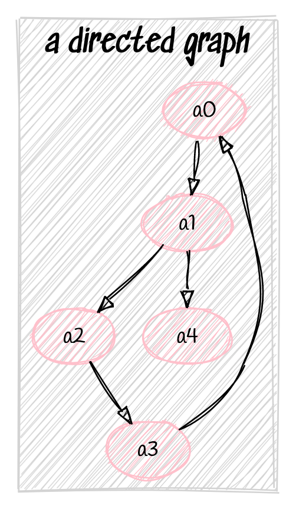

Markov Madness
Graphs
First, we'll introduce the concept of graphs and then study how they can be applied to inference problems. We define a graph \(G = (V,E)\) as
V- a set of vertices, also called nodes
E- a set of edges, which are pairs of vertices
Note that edges can be directed or undirected- below we show an example of each.

An undirected graph.
A directed graph.
Graphs are a natural way in which humans present information- for example, we might represent a system of highways and roads as a directed graph, which an edge going in the direction that traffic flows in. We're going to try to encode information and their dependencies using directed graphs. Let's consider again the event that you're eating ice cream on a given day. We might say that perhaps this event depends on the season and whether you're hungry. Whether you're hungry might depend on whether you've eaten dinner. A naive way that we might try to encode this is as follows

A directed graphical model about eating icecream.
Graphical Models
This brings us to the idea of graphical models. A graphical model is just a graph that in some way represents a set of distributions over random variables- each vertex represents a random variable (or event) and each edge in some way encodes a dependency.
First, let's look at what graphical models imply about the joint factorization.

This graph represents the factorization of the joint as
\[ p_{x,y,z}(x,y,z) = p_x(x)p_{y|x}(y|x)p_{z|y}(z|y) \]
This makes some intuitive sense- the graph tells us that \(y\) really only depends on \(x\) and that \(z\) only really depends on \(y\), so a given event \(x,y,z\)'s likelihood can be computed using just those conditional dependencies, and the distribution of \(x\). This graph also yields another important result: we know that the joint can always be factored using the chain rule as
\[ p_{x,y,z}(x,y,z) = p_x(x)p_{y|x}(y|x)p_{z|y, x}(z|y, x) \]
So setting those two factorizations equal to each other, we have that
\[ p_{x,y,z}(x,y,z) = p_x(x)p_{y|x}(y|x)p_{z|y, x}(z|y, x) = p_x(x)p_{y|x}(y|x)p_{z|y}(z|y) \]
And simplifying, we find that \(p_{z|y, x}(z|y, x) = p_{z|y}(z|y)\). Note that this matches our definition of conditional independence somewhat- in that the two probabilities are the same conditioning on \(x\) and not conditioning on \(x\). In fact, this relationship says that \(z\) and \(x\) are conditionally independent given \(y\).
Let's look at another:

This case is called a common cause, because \(x\) and \(z\) both depend on this other variable, \(y\), so they share that common cause. So here, we do something similar with the factorization- we know that given \(y\), \(x\) and \(z\) only depend on \(y\), so our factorization of the joint is:
\[ p_{x,y,z}(x,y,z) = p_y(y)p_{x|y}(x|y)p_{z|y}(z|y) \]
Hidden Markov Models
Now, armed with the knowledge of these two types of graph structures, we'll look at a very cool model called the Hidden Markov Model. In real life, we often deal with latent variables- things that cause observable events but that we do not precisely know themselves. For example, Harry Potter lives in a closet, and only knows what's happening in the outside world when Hermione sends him letters. Harry believes that the real world has two states- rainy and sunny, but Harry can't observe them himself. Hermione also doesn't tell him exactly what the weather is- she just tells him if she wore a sweater today or not. We see that there are a lot of dependencies here- if it's rainy today, it might be more likely to be rainy tomorrow and so on. But also, if it's rainy today, Hermione is probably more likely to wear a sweater. So in the below graphs, the \(x\) nodes denote the “latent variable”- \(x1\) is weather on the first day, \(x2\) is weather on the second day and so on. And the \(y\) nodes denote our observations- \(y1\) is whether Hermione wears a sweater on the first day, and so on.

Directed graphical model of an HMM.
Exercise:
Derive the factorization of the probability distribution \(p_{x_1,…,x_N,y_1,…,y_N}(x_1,…,x_N,y_1,…,y_N)\) using the two graphical model structure types we learned above.
Since \(x_1\) has no incoming edges (and is therefore dependent on no other nodes), we know there will be a \(p_{x_1}(x_1)\) term. Then, we see that \(y_1\) depends only on \(x_1\), so we multiply by the term \(p_{y_1|x_1}(y_1|x_1)\) to encode the graph that just consists of the nodes \(x_1, y_1\). Now, let's add \(x_2\). We see that it depends only on \(x_1\), so we multiply by the term \(p_{x_2|x_1}(x_2|x_1).\) Continuing in this manner through \(y_n\) and \(x_n\), we get the final factorization
\[ p_{x_1,…,x_N|y_1,…,y_N}(x_1,…,x_N|y_1,…,y_N) = p_{x_1}(x_1)\prod_{i=2}^N p_{x_i|x_{i-1}}(x_i|x_{i-1}) \prod_{j=1}^N p_{y_j|x_j}(y_j|x_j) \]
blah blah blah need lots of thoery first: graphs, HMMs (graphical models for factorization???) - teach directed graphical model for HMM s By the end of this lecture, we should have and understand the following to implement the lab:
\[ P(X_{0.. T}|Y_{0..T}) \propto P(X_0, Y_0) \prod_{t=1}^T P(X_t | X_{t-1}) \prod_{t=1}^T P(Y_t | X_t) \]
Such that we can immediately after derive the forward algorithm with just the motivation from the gridmaze.
Lab #3: time to explore!
Last week, we used sensor readings from the robot to identify where we were in the maze. As you may have noticed, this has some limitations: for example, consider the following robot positions:
Two robot positions with identical sensor readings. How do we decide where we really are?
Even if the green and blue robots were to try every position of their sensor turret, they would still get the same exact readings. Clearly, in order to determine where they are, the robots must explore!
To implement this, we will consider the robot localization problem as a hidden markov model. Our hidden states \(X_{0..t}\) will be our robot positions, and \(Y_{0..t}\) will be our sensor readings. At every timestep we'll take a random movement and then a sensor reading, and use this data to infer our robot position!
The Forward Algorithm
Derive forward algorithm from joint factorization, as motivated by this localization problem. In class, we can do this in groups or all together.
Moving the robots
Up to this point, our robots have been stationary. We can move our robots using some simple commands: bot.forward() to move one square forward, to move one square backward, bot.left() to turn 90 degrees to the left, and bot.right() to turn 90 degrees to the right.
After every call to bot.forward(), the robot will point its distance sensor forward and check if its safe to move before moving the sensor back to its previous position. If there is a wall in front of the robot and the robot decides it's unsafe to move, bot.forward() will return False; otherwise, it will return True. This is to ensure your robot does not run into walls.
Before you move on, test running a few movement commands in the Jupyter notebook.
Inference building blocks
Now it's time to begin building our inference pipeline. For the equation for \(\alpha(x_t)\) in the forward algorithm, we will need \(P(X_0=x_0)\), \(P(X_{t}=x_t|X_{t-1}=x_{t-1}, U_{t}=u_{t})\), and \(P(Y_t=y_t | X_t=x_t)\). Derive each of these expressions and implement them as Python methods in the Jupyter notebook. Assume that the robot has equal chance of starting in any state.
The method s_new = gm.simulatedAction(s, u) returns the state the robot would be in after performing action u in state s. u must be one of strings 'LEFT’, 'RIGHT’, or 'FORWARD’, and s must be a tuple of a position integer (0 through 8) and an angle integer in degrees, going clockwise from 0 as north. This will return a new state in the same format as s.
We are given that each initial state is equally likely, and we have \(9 \times 4=36\) possible states. Thus,
\[ P(X_0=x_0) = \frac{1}{36} \approx 0.0277 \]
We also seek \(P(X_{t}=x_t|X_{t-1}=x_{t-1}, U_{t}=u_{t})\), or the probability of transitioning to a state \(x_t\) from state \(x_{t-1}\) given action \(u_t\). This will be either \(1\) or \(0\), as our actions are deterministic (the same thing happens every time when action \(u\) is taken from state \(t\)). In code, this can be implemented as int(x_t==gm.simulatedAction(x_tminusone, u)).
Finally, we can implement \(P(Y_t=y_t | X_t=x_t)\) as a gaussian with mean \(\mu_t\) set by where we are in the maze (\(x_t\)). So, an implementation using only a forwards sensor reading could be \(\mathcal N(y_t, \mu=\mu_t, \sigma=5)\) with mu_t = gm.simulatedDistance(x_t[0], x_t[1]) using the previous convention of state being a tuple of (position, angle).
Putting it together
Implement a random walk on your robot in a loop by choosing randomly at each iteration whether to go forwards, turn left, or turn right. Then, implement the forward algorithm and print the most likely robot state at each iteration!
Once you've implemented the system, try it out from a few starting places in the maze. How many iterations does it take to converge to the right position? Does your implementation always converge? Discuss some strengths and limitations of this system with your group.
If your initial solution only used one sensor reading per iteration, try upgrading to using sensor readings from multiple angles. Can you make other improvements that allow your robot to localize quicker?